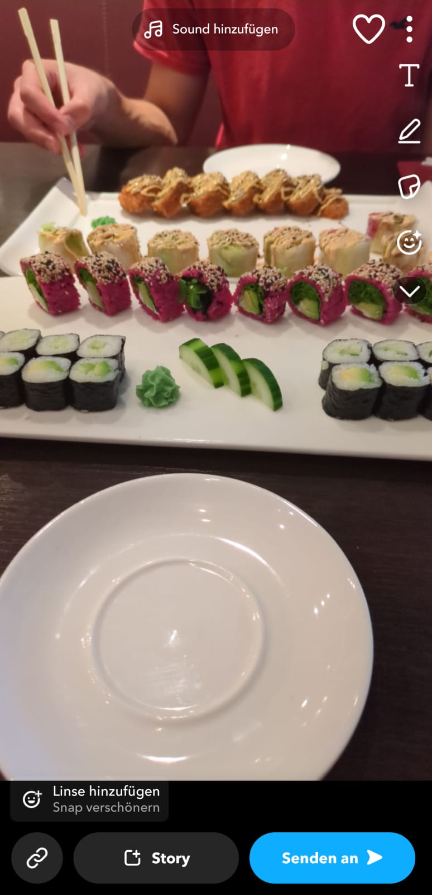
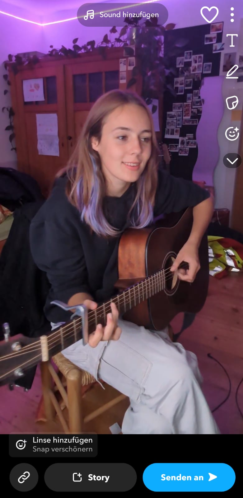
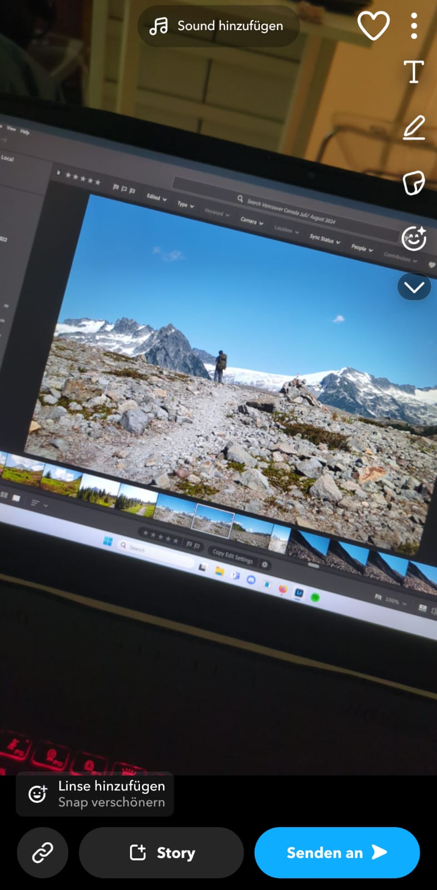

Hier erfährst du mehr über Sushi!

Musik ist meine große Leidenschaft. Ich spiele Gitarre, Klavier und singe gerne.

In meiner Freizeit bearbeite ich gerne Landschafts- und Reisefotos in Lightroom.